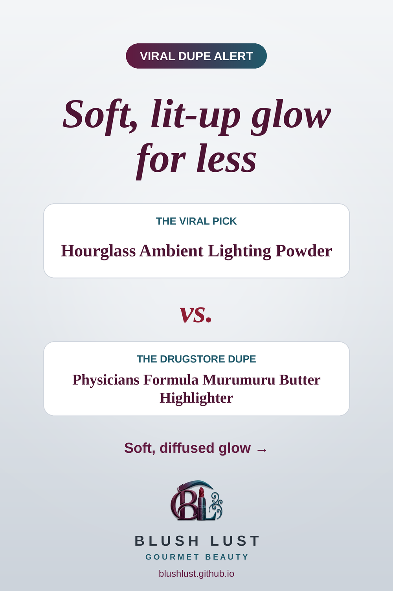

The glow finishing powder, for less
A soft, diffused glow that gives skin a flattering, candlelit finish.
This post contains affiliate links. If you buy through them, we may earn a small commission at no extra cost to you. As an Amazon Associate I earn from qualifying purchases.
Physicians Formula Murumuru Butter Highlighter
The viral pickHourglass Ambient Lighting Powder
vs.
The dupePhysicians Formula Murumuru Butter Highlighter

See today’s price on Amazon.ca →
Comparisons reflect what beauty shoppers commonly say, not lab testing. Shades and formulas vary — check reviews before you buy.